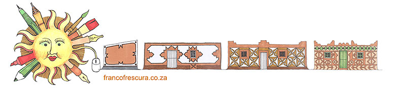
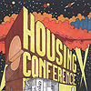
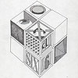
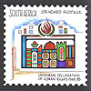
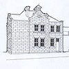
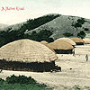

|

Introduction | franco frescura | architecture | urban issues | lectures | graphic work | postal history | historical archive
This section contains personal details, together with a small biography, an abridged curriculum vitae, a list of my publications, and highlights from my life as a graphic artist. I have also included, without prejudice, interviews and reviews of my work, as well as unposed portraits drawn by students. This is perhaps the most substantial section of the website, and includes articles on indigenous architecture, colonial settlement, mission stations, and historical conservation. A number of conservation reports on small colonial towns and villages in the Eastern Cape have been incorporated, although these will eventually be filtered off to a separate website.

The deconstruction of the “apartheid city” remains high on my wish-list, and I have grouped here a number of essays on the subject. Associated with this is the topic of popular housing, and I have included here a number of hitherto unpublished reports.

LECTURES, TUTORIALS AND CONFERENCE PAPERS This section brings together the notes from a number of public lectures and conference papers delivered since 1977, some being more complete than others, but all hitherto unpublished. I have also included some university lecturing and tutorial handouts, whose distribution has always been limited.

“The John Burger Saga” has been reproduced in all its scurrilous glory with a selection of other graphics, largely of a political nature, and only some of which have been published previously. Wherever possible these have been contextualized. The stamp essays produced when I was employed by the SA Post Office have been grouped in a separate section.

The bulk of this section is given over to research into the Cape colonial Post Office, but notes on more recent South African stamp issues published in “Setempe” have also been included. The majority of the longer research papers only found publication in specialized journals overseas.

This section is experimental, and aims to bring together images of southern Africa published on postcards between 1903 and the 1920s. It includes indigenous architecture and customs, colonial architecture, and small town settlement. Copyright @ francofrescura.co.za | designed by sahistory.org.za
|